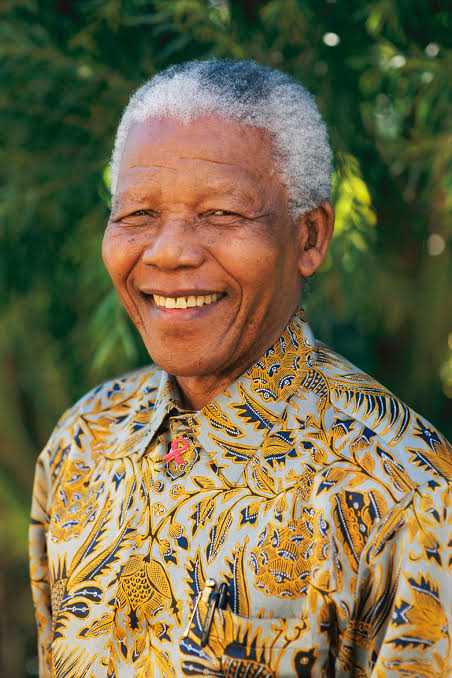
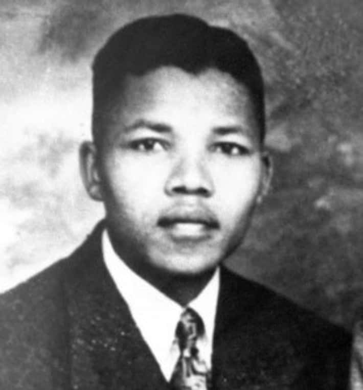
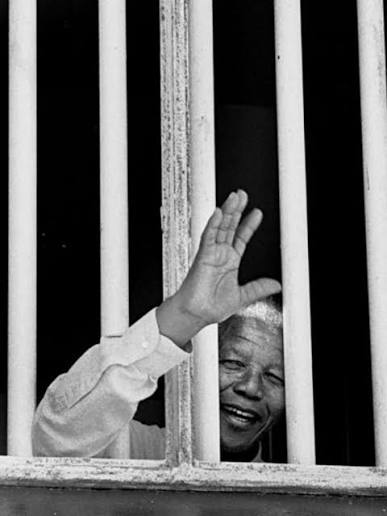

Nelson Mandela inspired millions across the world. His courage, forgiveness and determination continue to encourage people to fight for justice and equality.
"It always seems impossible until it's done."
"Education is the most powerful weapon which you can use to change the world."

Nelson Rolihlahla Mandela was born on 18 July 1918 in Mvezo, South Africa. He became one of the greatest leaders in history for fighting against apartheid and promoting peace, equality, and human rights.


Mandela studied law at the University of Fort Hare and later at the University of Witwatersrand. During his youth he became involved in political activism against racial discrimination.


Nelson Mandela inspired millions across the world. His courage, forgiveness and determination continue to encourage people to fight for justice and equality.
"It always seems impossible until it's done."


"Education is the most powerful weapon which you can use to change the world."
"It always seems impossible until it's done."
"No one is born hating another person because of the color of his skin."
| Full Name | Nelson Rolihlahla Mandela |
|---|---|
| Date of Birth | 18 July 1918 |
| Birth Place | Mvezo, South Africa |
| Nationality | South African |
| Profession | Lawyer, Activist, President |
| Nobel Peace Prize | 1993 |
| Years in Prison | 27 Years |

 Others
Others